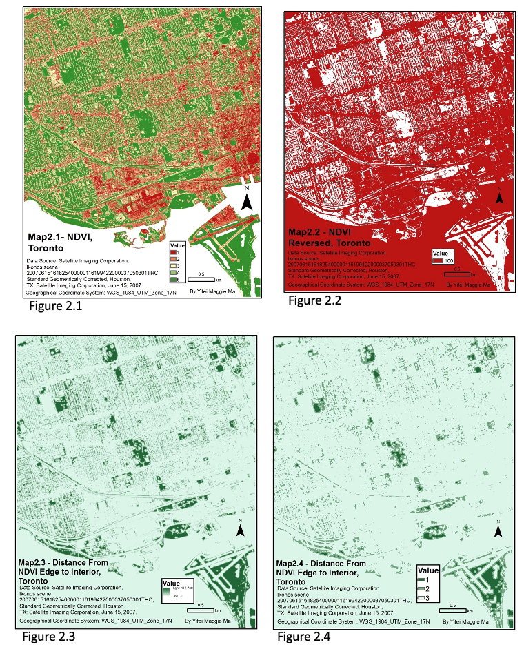
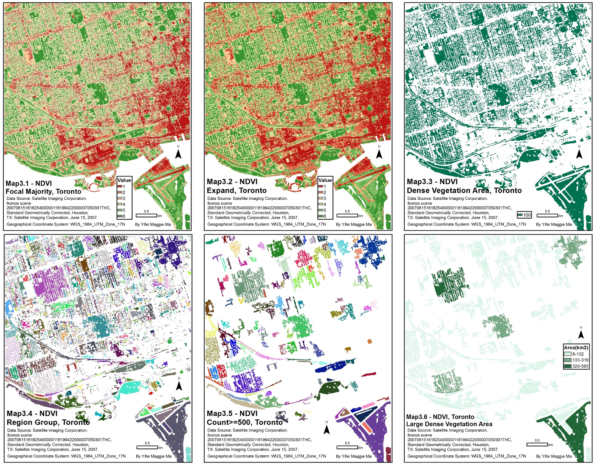

This project was performed as part of an advanced GIS course during first semester of my junior year in university. The purpose of this assignment was to learn how to perform various types of raster analysis, including variety map, buffer map, and zonal area map. Using Toronto as the study area, NDVI values were calculated and mapped. Moreover, the densest vegetation areas in Toronto were identified and areas calculated, along with the perimeter of green spaces in the urban environment.
Map I: NDVI Classification Maps
NDVI values were calculated by subtracting the difference in infrared and red bands value divided by the sum of both values. In order to create a map with NDVI value for Toronto, Raster Calculator function was used with the expression “(Float(%nir%) - Float(%red%)) / (Float(%nir%) + Float(%red%))”. It is essential to use Float expression because the output values vary from -1 to 1 and will require decimals to be included in order to present the proper NDVI values. Since we do not wish to include water for further analysis, I used Extract by Mask function with the NDVI map just created and land_use.shp given to assign NoData value to water. Lastly, I used Reclassify tool to classify NDVI values into six quantiles.
Above steps generated figure1.1 below. For the second map of the first question (figure1.2), I used focal statistics tool on figure1.1 with neighborhood setting 3*3 and statistics type- VARIETY to generate the variety map, the rest was left at default. Variety option in focal statistics calculates the number of unique values of the cells in the neighborhood. Since figure1.1 is an integer raster dataset, it can be used as an input for variety type. In this case, it shows how many different types of cell values in the neighborhood; or in other words, diversity among NDVI values in Toronto.

Map II: Distance from NDVI Edge to Interior Map
For the second part of this project, I first used a reclassify tool on figure 1.1 to combine classes 5 and 6 together into one value. I generated figure 2.1 as a result of this step. In order to create a buffer map showing distances from the edge of this new combined class to the interior, I used the tools Reclasssify and Euclidean Distance. Reclassify tool was used to reverse cell values; specifically, I assigned value 5 to NoData, and the rest to 100. This step enables to measure distance from edge into interior using Euclidean Distance tool. I used the default setting for all optional parameters in Euclidean Distance. To group the distances into 3 classes, I used the Reclassify tool again with values reclassified into three natural breaks (figure 2.4).

MapIII: Dense Vegetation Area Maps
Figure 3.1 was created to generalize the six-class NDVI map. Figure 3.2 was created to fill in the missing NoData regions (except for Lake Ontario). Figure 3.3 was created to identify dense vegetation area (class 5 and 6) by assigning NoData to the rest of the values. Figure 3.4 was created to convert region to zones to prepare data for zonal analysis. Figure 3.5 was created to extract only bigger dense vegetation zones. Figure 3.6 was the final result showing the numeric area value for each big dense vegetation zones in the study area.
